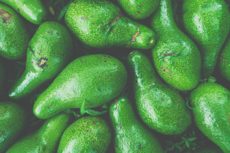
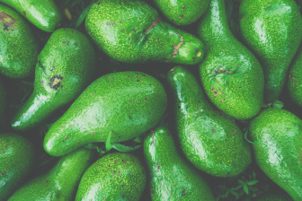

Angela Serrano
Ph.D. Candidate in sociology
at the University of Wisconsin-Madison
Agroecology | Sociology | Engaged scholarship

Angela Serrano
Ph.D. Candidate in sociology
at the University of Wisconsin-Madison
Agroecology | Sociology | Engaged scholarship
About

I am an environmental sociologist investigating equity and sustainability in food systems. My research builds dialogues between the political economy of global value chains, political ecology, and the sociology of agri-food systems. Through these dialogues, I study how different global industries shape livelihood opportunities for rural communities in Latin America.
My ongoing dissertation project examines how the palm oil industry has transformed lives and landscapes in the region of Magdalena Medio, Colombia. This project also builds on small-scale farmers’ experiences to identify possible transition pathways towards more sustainable and equitable agriculture.
I am currently a Ph.D. Candidate in Sociology at the University of Wisconsin-Madison and received an M.A. in Geography from King’s College London, as well as
undergraduate degrees in both economics and political science from Universidad de los Andes.
Click here to learn more about my research. Access my CV here or email me at serranozapat@wisc.edu.
Research
My research is based on ethnographically grounded value chain analysis and engaged scholarship. I study labor and ecological conditions in places of agricultural production, as well as their connections to global economic and cultural trends. This work is informed by, and seeks to support, the concerns and struggles of the farmers and farmworkers who participate in my research.
I invite you to read my articles published in Environment and Planning E: Nature and Space and the Journal of Political Ecology, as well as pieces for wider audiences I’ve written for various outlets. At the end of the page you can find the media coverage this work has received.
Journal Articles
 


Who is left behind in global food systems? Local farmers failed by Colombia’s avocado boom
Environment and Planning E: Nature and Space, 2019
Read

Making a Financial Market: the Economization and Topology of Farmland REITs
Journal of Political Ecology, 2019
ReadPublic Sociology
Can Small-Scale Farming Save Oil Palm?
Edge Effects Magazine

Colombian National Strike: Reasons and Triggers for Protest (Spanish)
Elespectador.com
Labor Informality Threatens Food Supply Worldwide (Spanish)
Cider Newsletter
Media mentions and appearances

"We Were Able to Narrate Our Struggle": Launching the Report that the Center for Historical Memory did not Prioritize (Spanish)
Colombia2020

Palm Oil Union Leaders: 40 Years Struggling for their Rights (Spanish)
La Paz en el Terreno

Mal Menor (Spanish)
Documentary by José David Escobar

Who’s really paying for your avocado?
Asparragus Magazine
Teaching


Teaching approach
I approach teaching as an opportunity to learn from my students about the different experiences they bring to the classroom and build on these experiences to apply the concepts we are studying.
Throughout my teaching career, discussing with students topics such as university life, music genres, and volunteer experiences has built productive spaces to learn about new topics and discuss different applications of sociological and environmental perspectives. I strive to create a welcoming environment for students with a diversity of backgrounds and learning styles. My classes are a mix of small and large group discussions with writing, game, debate, and drawing activities. I teach sociology and environmental studies as toolkits to better understand inequality and to forge socioenvironmental transformations in theoretically informed ways.
During the second semester of 2020 I am the lead instructor for Qualitative Research Methods in Social Sciences
This class offers an overview of different methodological approaches in the social sciences. There are 20 students enrolled. During each weekly session we analyze different ways of applying qualitative research methodologies and their relevance to students’ research interests. The course is part of different masters’ degrees in the School of Social Sciences at Universidad de los Andes in Bogota, Colombia. Click here to download the course syllabus.
I have trained new Teaching Assistants for advanced communication courses
I facilitated a session on motivating students about writing and speaking assignments and another one focused on teaching communications in a second language. This was an intense two-day training for over 60 new teaching assistants in communications courses from a variety of disciplines. Click here to download one of the handouts I designed for this training.
I have been a Teaching Assistant (TA) for Survey of Sociology for three semesters.
In this course, I led two discussion sections, each one with 15 students. We met twice per week to discuss assigned readings and develop advanced writing and speaking skills. Besides offering an introduction to the main subfields in sociology, this course fulfills the advanced communication course requirement at University of Wisconsin-Madison. Click here to download my section syllabus.
Qualitative Feedback
“I thought Angela was an excellent TA. The discussion section helped me fully understand material and I thought each activity was relevant. I appreciated her genuine desire to help all of us and I felt as though she really cared and wanted us all to succeed. The Weekly worksheets were also very helpful and I appreciated them and thought they facilitated my learning. I don't think I would have done as well with a different TA”
Student, Survey of Sociology, Fall 2018
“Angela is extremely helpful and really hits on the points that are important. She does everything in her power to accommodate students.”
Student, Survey of Sociology, Spring 2018
“Angela is a great TA. She's probably the best one I've had in college as a graduating senior. She's very friendly and inclusive to everyone. She makes sure everyone gets a turn to speak, and she knows the material well. Walking into discussion each class you never know what activity we are going to do which makes it fun. She's always incorporating new ways to learn the material. She grades fairly. Great TA!”
Student, Survey of Sociology, Spring 2018
“I loved having Angela as a TA! She constantly made adjustments to our discussion to ensure equal participants from students. Additionally, she presented quality examples that us students could easily relate to in order to understand key examples. She was also extremely helpful when meeting one-on-one. Overall, I would definitely recommend taking Sociology 210 with Angela to my friends!”
Student, Survey of Sociology, Fall 2017
You can click here to download the end-of-the-semester teaching evaluations from all the courses I’ve taught.
If you would like to contact me to discuss my research or for teaching opportunities, I’m an email away!
email: serranozapat@wisc.edu
If you want to know more about my professional and academic background, click here to download my CV.